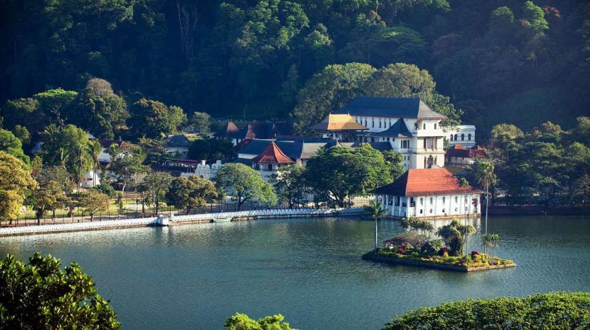

02.Ella
Ella is a peaceful small village in the middle of a beautiful green countryside, with spectacular views.
03.Galle
Galle Is a Capital City Of The Sothern Province. It's known for Galle Fort, The Fortifined old city founded by protuguess colonists in the 16th century04.Colombo
Sri Lanka's Capital Colombo, a port city, with a rich colonial heritage, on the Western coast is a potpourri of races, religions and cultures.

05.Kandy
Kandy, the cultural of Sri Lanka, a World Heritage Site sits pretty in a valley surrounded by rings of mountains, 115km away from the seaport Colombo.06.Nuwara Eliya
Nuwara Eliya is a city in the hill country of the Central Province, Sri Lanka. The city is overlooked by Pidurutalagala, the tallest mountain in Sri Lanka.
07.Yala National Park
Nestled in the south-eastern corner of Sri Lanka, Yala National Park is the island's principle national park and offers the greatest diversity of animal and birdlife in the country.
08.Udawalawe National Park
Udawalawe National Park, the sixth largest animal sanctuary of Sri Lanka is located 180 km from Colombo in south-central sector of the island.
09.Adam's Peak
The mountain of adam's peak is one of the rare places that people of four major religions in the world worship.10.Bentota
Bentota is located 64km south of Colombo in the South-western coastal belt of Sri Lanka.Bentota is famously known for the Bentota Beach, which is loved by tourists and locals alike.11.Unawatuna
Unawatuna is a coastal town in Galle district of Sri Lanka. Unawatuna is a major tourist attraction in Sri Lanka and known for its beach and corals.
12.Polonnaruwa
Polonnaruwa is the second largest city in North Central Province, but it is known as one of the cleanest and more beautiful cities in the country.
13.Anuradhapura
Anuradhapura is the first capital of Sri Lanka located in north central province of Sri Lanka.The ruins of Anuradhapura are one of South Asia's most evocative sights.
14.Dambulla
Dambulla is a town situated in the north of Matale District, Central Province of Sri Lanka.Dambulla is famous for cave-temple complex in Sri Lanka.15.Trincomalee
Trincomalee is located on Sri Lanka's north eastern coast. It is Famous for its deep, sapphire-blue harbour, its powdery beaches and charming Hindu culture.
16.Weligama
Weligama is located in Matara district.A perky fishing village with a sandy stretch of beach and low riding waves, Weligama has become an upcoming attraction for surfing and tourism.
17.Horton Plains National Park
Horton Plains in Sri Lanka, is the coldest and windiest location in the country. It consists of ecosystems such as Montane evergreen forests, grasslands, marshy lands and aquatic ecosystem.
18.Nilaveli
Nilaveli is located north-west of the Island. It is one of the most beautiful beaches in Sri Lanka renowned for its soft white sand and breath-taking bays.19.Bundala National Park
Bundala National Park is situated in the southern province of Sri Lanka, about 245km from Colombo. Bundala national park is a perfect trip for bird watchers & nature lovers.20.Kaudulla National Park
Kaudulla National Park is one of the best national parks to spot Elephants in Sri Lanka. It is home to 200+ elephants, monkeys, crocodiles, and even a handful of leopards.
21.Sinharaja Forest Reserve
Sinharaja is a Rain Forest and a biodiversity hotspot which is located in south west Sri Lanka. Sinharaja rain forest is the country’s last viable area of primary tropical rain forest.22.Passikudah
Passikudah is a small coastal village situated in the east of Sri Lanka about 35 kilometres from Batticaloa.Passikudah is famous for its crystal blue waters and golden sand.